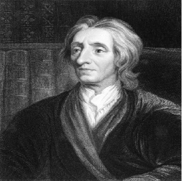

No século XVII, John Locke revolucionou a política ao defender que todo ser humano nasce com direitos naturais, como vida, liberdade e propriedade. Para ele, o poder deve vir do povo, e governos que falham podem ser destituídos — ideias que influenciaram revoluções e constituíram bases da democracia moderna. Além da política, Locke defendeu a tolerância religiosa e a liberdade de consciência, deixando um legado que ultrapassa fronteiras e continua inspirando sociedades a valorizar a justiça e a participação cidadã.